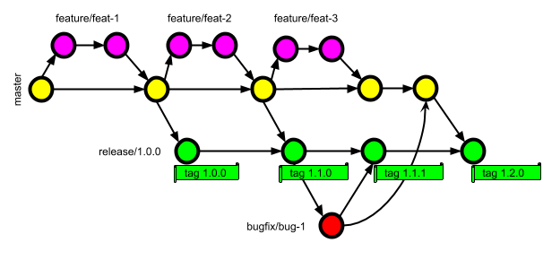
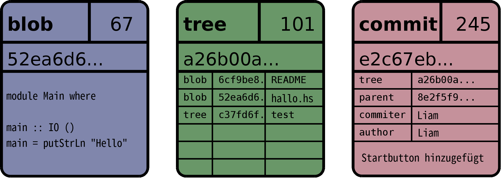
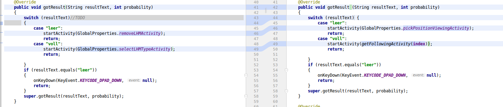

Versionskontrolle
Am Beispiel von Git
Informatik GFS - Liam Wachter - 13. Klasse
Inhalt
- Wer braucht Versionskontrolle?
- Was ist Versionskontrolle?
- Versionkontrollsysteme
- Git
- Grundlegende Operationen
- Commits & das Objektmodell
- Das Copy-Modify-Merge-Konzept
- Git Hosting
Wer braucht Versionskontrolle?
Projekt...
- mit mehr als einer Version
- mit mehr als einem Entwickler
- auf das man von überall zugreifen will
Was ist Versionskontrolle?
Strg + Z für Profis

Mehrere Stränge
Versionskontrollsysteme
1985: Revision Control System (RCS)
1990: Concurrent Versions System (CVS)
2000: Subversion
2005: Git
Git
„I decided I could write something better than everything out there in two weeks. And I was right.“

Wichtige Operationen
$ git init$ git clone <URL>$ git add <file | -A | -u>$ git commit [-m "Commit Nachricht"]$ git push$ git pullEin Commit

Das Objektmodell
Das Objektmodell

Das Copy-Merge-Konzept
Git hosting
Verwendete Bilder
git-scm.com/book/de/v1/Los-geht%E2%80%99s-Git-Grundlagen unter MIT Licensegithub.com/allegro/axion-release-plugin/issues/52 unter Apache License
github.com/datasciencelabs/2016/blob/master/lectures/git-and-github/ © 2016 Harvard T.H. Chan School of Public Health
http://gitbu.ch/ch02.html unter CC-BY-NC-SA Haenel, Pfenz
git-scm.com/book/de/v1/Git-Interna-Git-Objekte unter MIT License
www.itmethods.com/github-logo-1/ unter GitHub Logo License
about.gitlab.com/2015/07/03/our-new-logo/ unter CC-BY-SA Robert Speicher
Weiterführende Quellen
gitbu.ch git-scm.com/documentation guides.github.com github.com/sevenmaster/InformatikGFS